Xcode
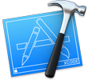
Xcode，前身为乔帮主创建NeXT公司时开发的Project Builder，NeXT被苹果公司收购后于2003年正式发布Xcode 1.0。在Xcode出现之前开发Mac OS X应用程序的开发工具很凌乱，直到Xcode 3.0的发布，它成为了开发人员建立 Mac OS X 应用程序的最快捷方式，也是利用苹果电脑公司新技术的最简单途径。到3.1版本后，附加了iOS SDK，这样开发者从此可以不用再单独下载iOS SDK了。
SDK是什么？它的全称——“software developer kit” 直译过来就是一个“软件开发包”，iOS SDK提供一堆与iOS有关的各种方法接口（也叫API），可以通过调用iOS SDK里提供的各种方法来实现我们想要的功能。
在4.0版本之前，如果想要下载Xcode进行Mac OS X或者iOS系统下的应用程序开发的话，要求必须购买开发者证书，成为开发者才行。4.0版本到来后，苹果公司不仅仅向个人开发者开放了下载权限，非开发者也可以进行下载，但得支付4.99美元。到了4.1版本，Xcode开始面向Mac OS X10.6和10.7版本的所有用户提供免费下载。这种“区别”对待的情况，直到4.5版本，Xcode才正式提供免费下载。
以上就是关于Xcode简单的背景介绍，目前最新的Xcode版本已经到了8.3.2。可以说，Xcode正在变得越来越好，对给开发者提供了非常多的帮助。接下来，我们将从Xcode的首页开始与大家一起探索Xcode。
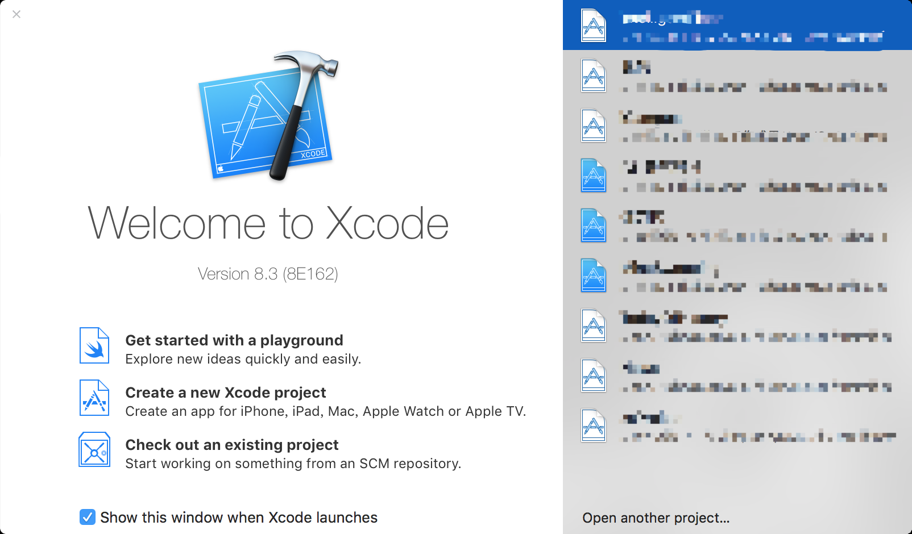
上图为Xcode启动完毕后出现的首页界面。在这个页面中，我们看到了有“Get start with a playground” 、“Create a new Xcode project”和“Check out an existing project”三个选项。
笼统的来说，“Get start with a playground”的作用有以下几点：
1、可以让你快速的玩转Swift；
2、验证算法。这一点在用Swift来刷各种编程题时非常的舒服；
3、享受即时编译带来的快感。
那么就来看看这个开发利剑 —— “Swift playground”是怎么一回事吧，

在这里，我们设置了Name为默认的“Myplayground”（平台随意）选择playground文件存放的路径，点击Next。
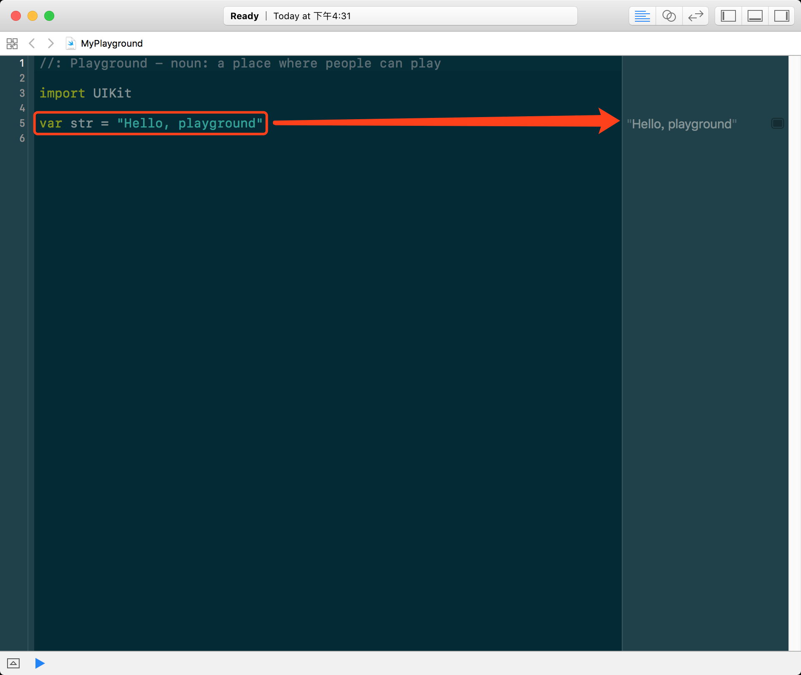
上图中所示的为Swift playground默认创建好的一段代码，这段代码的含义已经很清晰了，第三行告诉我们import，也就是导入了一个东西，这个东西叫做UIKit。第五行代码是创建了一个变量，变量的内容是一个字符串，字符串的内容是”Hello, playground”。var就是variable变量的简写，与之对应的是let，Swift在这一块内容中据说是借鉴了Scala语言的var和val。该变量的名字叫做str，这个名字大家可以随意选取。
既然，我们现在知道了str是个字符串变量，那么还可以玩一些这样的事情，
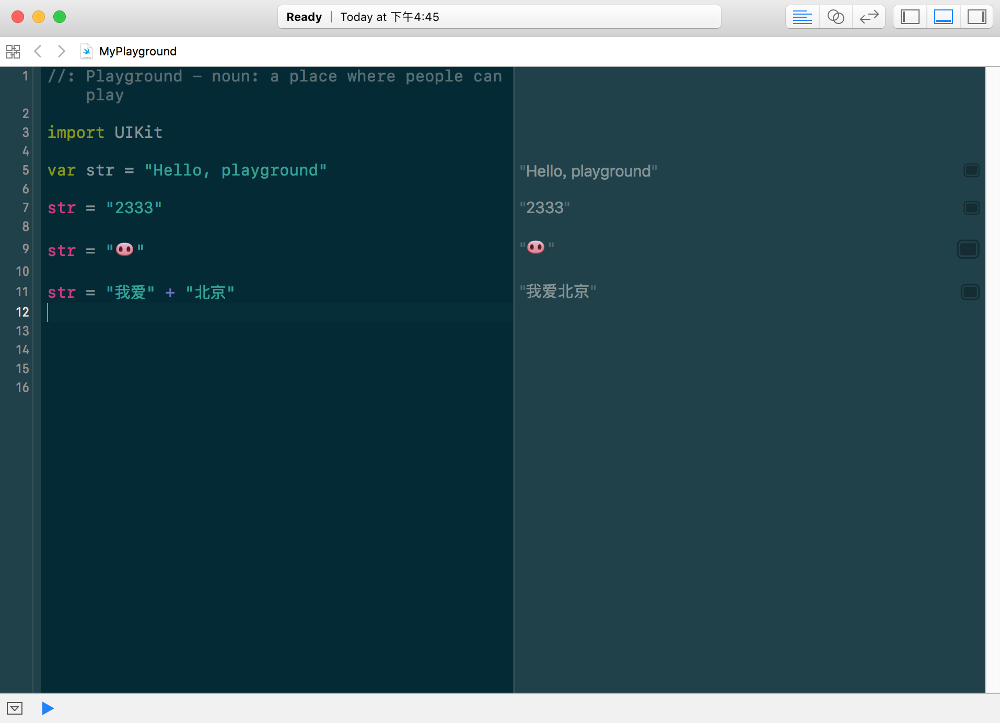
甚至，你还可以在Swift playground中做这样的事情，
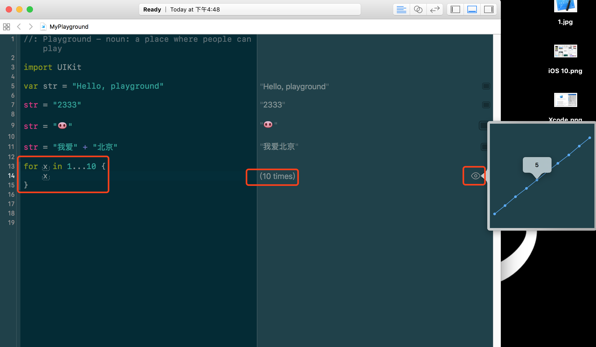
你完全可以在Swift playground中以图形化的方式显示出某个值的变化趋势，对使用Swift语言来调试算法的同学来说是一个莫大的帮助。当然，关于Swift playground还有一堆很好玩的功能，笔者在此把大家领进门，剩下的就靠同学们自己努力了。
关于Swift playground，笔者就介绍到这里。苹果推出Swift playground主要目的就是让大家快速的学习Swift语法，用Swift搞点事情。
接下来，我们来看看第二个选项 —— “Create a new Xcode project”，创建一个Xcode工程。
这就引入了一个新的问题，什么是工程？工程是什么意思？
百度百科是这么说的“工程是科学和数学的某种应用，通过这一应用，使自然界的物质和能源的特性能够通过各种结构、机器、产品、系统和过程，是以最短的时间和最少的人力、物力做出高效、可靠且对人类有用的东西”。
ok，我们要的就是这种效果，Xcode中所指的工程就是计算机科学和数学的应用，通过这一应用，使代码通过各种结构、系统和过程，以最短的时间和最少的人力、物力做出高校、可靠且对人类有用的东西。
上面这段话是笔者按照传统的工程定义上翻译过来对应上Xcode的工程概念，再说的通俗一些，就是你通过创建工程，来缩短各种文件之间的关联关系，缩短开发时间，让开发者把注意力集中在编码而不是各种文件之间的编译和链接上，就Xcode来说，它还提供了一套缩短UI界面搭建时间的工具（这部分的内容我们将在后边讲到）。
毕竟我们是在IDE里创建的是一个工程，工程具备的属性和功能，IDE都能够提供，比如上文中我们所讲到的通过各种结构帮助开发者更加快速的构建工程，这一点在IDE中，提供非常多的便捷功能，利用这些IDE开发者写好的功能，我们在编码时，就能够方便很多。
在了解Xcode中的工程是什么意思后，来创建一个工程，

在上图中的红框部分，其中提供了包括iOS、watchOS、tvOS、macOS这四大系统的模板文件。
说到模板文件，这又是一个什么东西呢？模板模板，就是提供了一个系统在你创建文件的时候就给你写好部分基础内容，如果大家有过一些使用IDE进行编程的实践，能发现，写C、C++或者java程序性的时候，有些IDE会默认在创建出来的工程文件中写好“hello，world”，这就是模板文件下的简单模板代码。
如果你是一个刚入门的新手，没关系。在你以后的编程生涯中，会经常遇到这种情况，以至于你会特别烦，你就会像笔者一样，翻各种IDE的应用程序包文件，修改它创建各种文件时自带的一些模板内容。

在这里，我们选择macOS下的“command Line Tool”，翻译过来就是命令行工具，创建一个命令行工具文件，

Product Name：你的工程文件的名字
Team：这里需要选择开发者，现在的Xcode版本能够生成个人免费开发者证书，但这几年面向个人开发者的免费证书所具备的功能非常的有限，不过就前期开发来说，完全足够。如果你是第一次使用Xcode创建工程，不知道去哪生成个人开发者免费证书的话，稍等文后会讲到。
Organization Name：这里是组织名字，这部分的内容会出现在每个文件的开头，标识出这个文件是谁写的如下图所示，
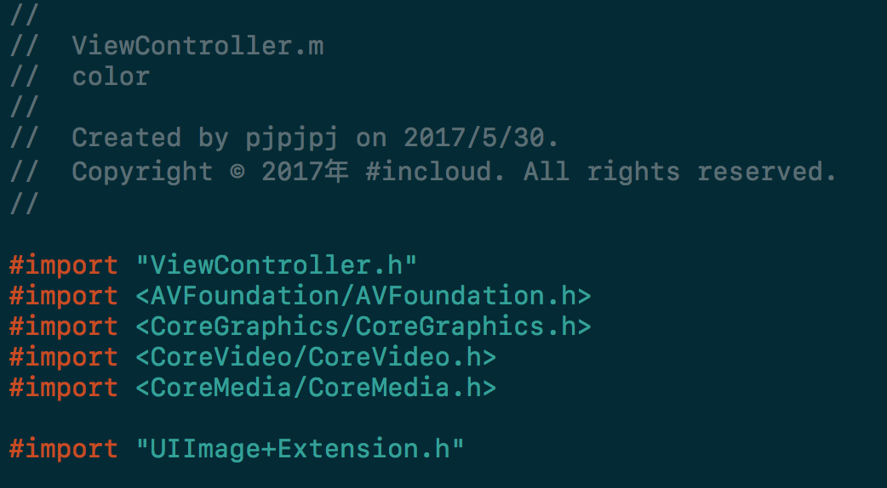
Organization Identifier：这是组织标识符，标明的是你这个工程文件的所属的组织，随意写，或者使用Xcode默认的。
Bundle Identifier：这是一个非常重要的东西，所以苹果不会让你自己填写。不过它的构造规则我们已经可以猜出来了，就是你的Organization Identifier.Product Name。这样的话，就可以在数以亿计的APP中唯一的表示你的APP（虽然我们现在写的只是一个命令行程序）
Language：目前Xcode默认自带的的语言只有Swift、Objective-C、C++、C四种语言，如果你想让Xcode支持Java等其它语言，得做一些设置，这部分内容不是本次教程重点，大家有兴趣可以自己网上搜索一番。
—
我们来看看上文中所说的如何生成一个个人免费的开发者证书，这一步不是必须的，只是作为一个拓展
首先在Xcode的菜单栏中，选择Xcode -> Preferences
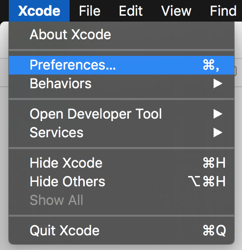
在新展出的页面中选择Account，然后在在右下角选择“+”，Add Apple ID，如下图所示，
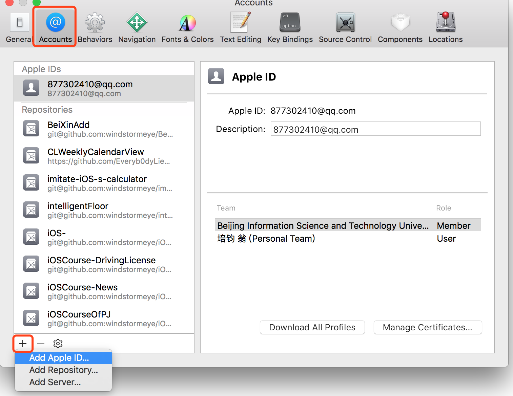
然后在出现的页面中，填写你的Apple ID和密码，即可创建一个免费的个人开发者证书，
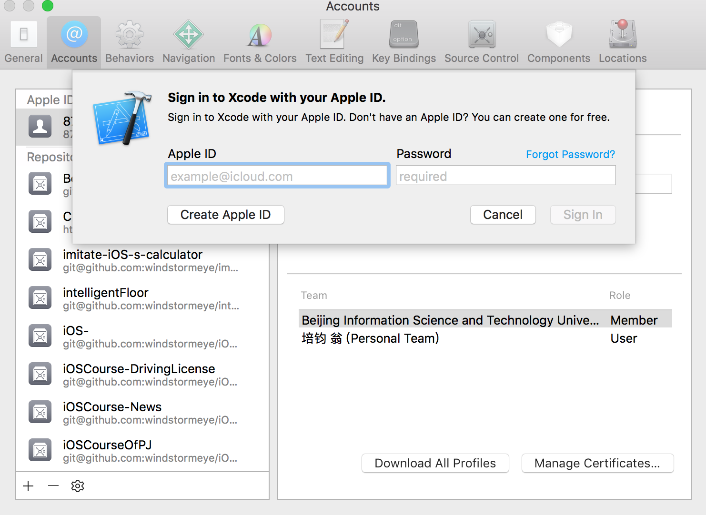
记住，这只是一个免费，免费，免费的个人开发者证书，别想着有了它就能打包你写好的APP然后上架，千万记得，这是绝对不可以的，想要把你写好的APP打包上架的话，你需要花费688元购买正式的开发者证书。
经过以上操作，选择好工程文件所在路径后，我们进入到了如下界面，
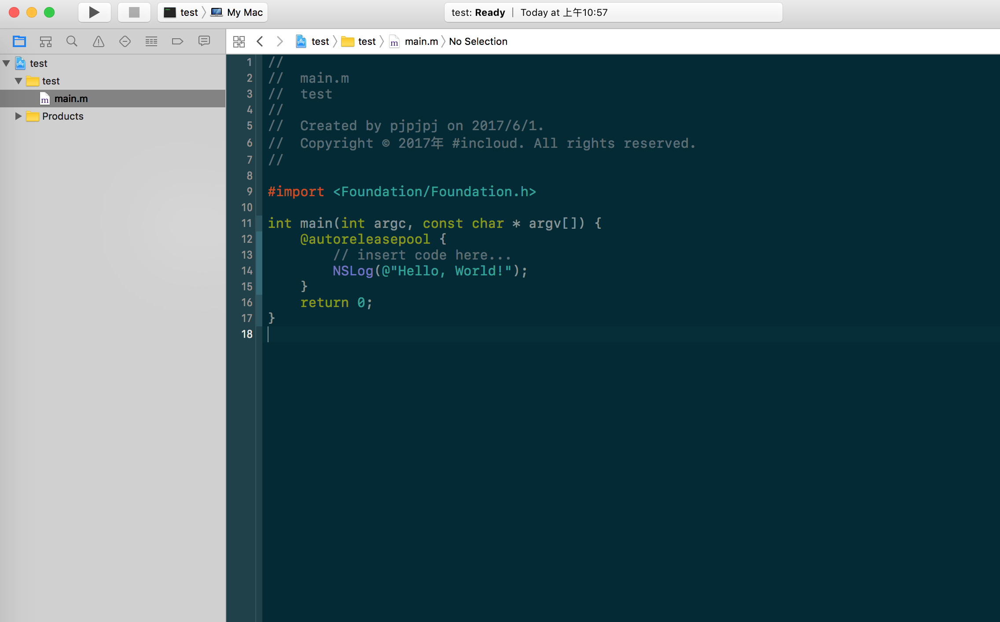
你会发现跟以往的main.c、main.cpp、main.java不一样了，这回出现了main.m，后缀名为.m的文件就是专门编写Objective-C语言的文件，如果你用创建的是一个Swift语言编写的文件，它的名字会是main.swift。所以大家可以从这些文件的后缀名中看出是用什么语言编写的。
笔者上文所说的模板文件，在此得到了验证。Xcode在我们创建工程文件的时候，给我们自动内置了一个Objective-C版的“Hello，world”程序。
接下来，我们再重复一遍刚才创建工程的步骤，重新创建一个编程语言为C的工程文件，
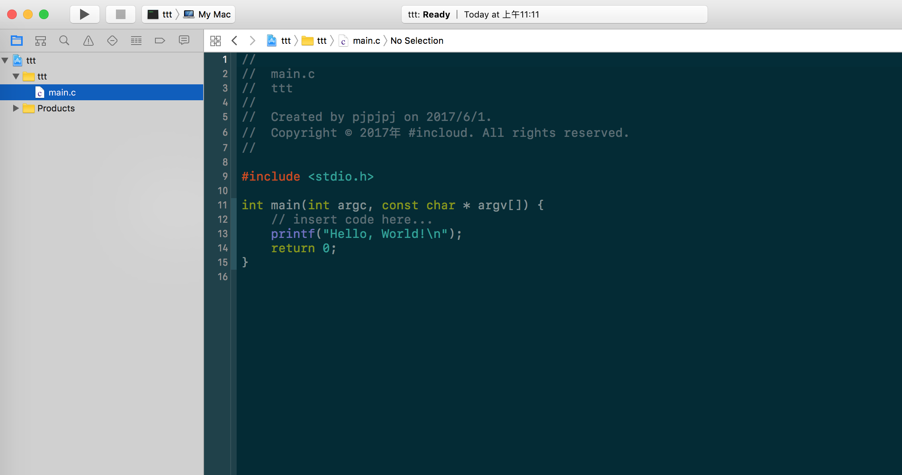
按下command+R，就会触发Xcode的“Run”功能，也就是运行，
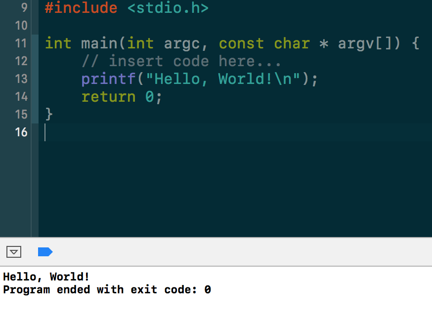
按下了command+B，则触发了Xcode的“Build”功能，也就是编译。这只是起到了编译的作用，只是把你写好的C代码转化为了二进制码，通过这个功能可以起到一些语法的检查（虽然Xcode的语法检查非常的强大）和编译时错误检查等（有可能是文件链接失败等原因）。
左上角的这部分内容，只有到iOS开发中才能用的到，

Xcode中的报错和警告有一下几种情况，
1、可由Xcode自动修复的错误。如果出现了这种情况，大家可以点击红点，有Xcode自动帮我们修复语法上的错误。不过这有一点需要注意的地方是，这种情况也有可能是因为我们的回车换行引起的，导致代码无法正常结束，Xcode认为你需要加上 ; 。
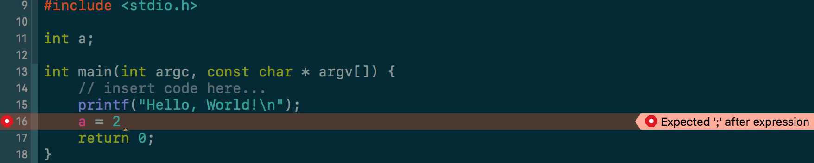
点击红点后，出现“Fix-it”，回车即可自动修复。
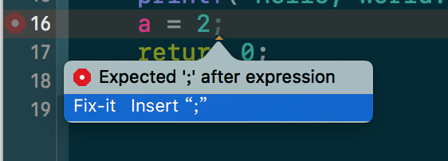
2、可由Xcode自动修复的警告错误。
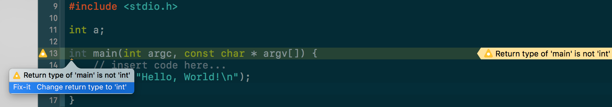
意思是你写了一个不是很符合要求的代码，给你抛出一个警告，因为是警告并不是让代码运行不了的报错，所以你大可放心的按下Command + R运行你的代码，不过，需要注意的地方是，
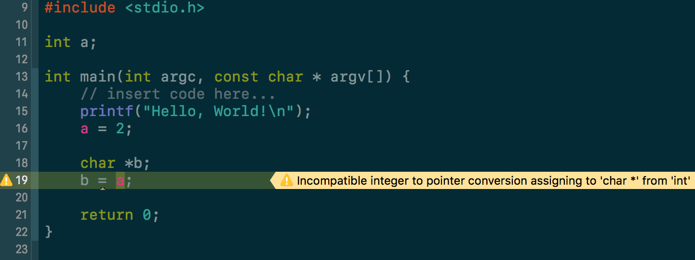
如果你写了一个类型下文中的代码，虽然Xcode也只给你报了一个警告，但是也要注意，这很明显是一个类型错误的警告。那为什么都是类型错误还不报错，只是一个警告呢？大家可以做个测试，就算你写了这种代码，Xcode照样会给你编译通过，甚至运行通过。但，如果你是在做真正开发的话，一不小心写了这种代码，你就会出现值为NULL的情况，因为两个变量的类型不一样，所以做赋值操作时，就会取不到需要的值。
但是，也就是因为警告并不会让代码不能运行，所以很多同学在开发的时候就会在脑海中产生一种思想，反正我的代码能跑，报那么多的警告也没关系，就这样的吧。这种思想万万不可取，虽然Xcode给你报的警告确实不会导致你的代码不可运行，万一你写的这部分代码就在赋值的时候因为两种变量的类型差别导致取到了NULL（空）值，有极大的可能会导致整个APP崩掉。
所以，笔者推荐的做法是，先查看一遍警告的内容是什么，如果警告的内容危险度比较小，比如说，我们可能是用了一些老的API，老的函数、方法等，现在已经有了新的替代方案，所以Xcode会给你抛出一个警告，告诉你该换方法啦，这有一个比你这个好的方法。在这种情况下，我们就可以考虑暂时不用管。
Xcode中经常的出现的报错和警告情况就以上的这么两种，这是最经常出现的，还有一些别的情况，例如可能是你在导入头文件的时候，被导入的文件并不在该工程路径下，此时Xcode就会在你按下Command + R的时候给你报了一个编译链接时错误，报出这个错误后经常会带上Xcode在编译时的日志信息，大家可以在这个日志信息中看到具体是到哪步编译链接时出现的错误
如果大家在使用Xcode写代码时，发现需要进行代码分层，比如说不想把一大段代码挤在main函数里边，想要进行多文件编码 ，那怎么新建一个文件呢？
在文件索引区中随意选中一个文件或者文件夹，右键 -> New File，
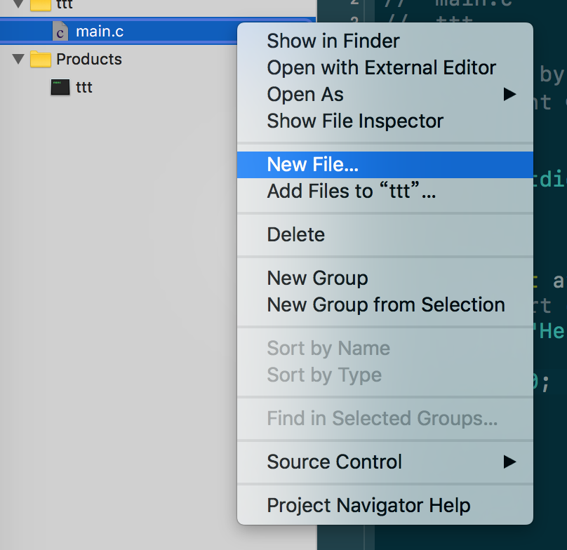
然后在弹出的新页面中，选中你要创建的文件，
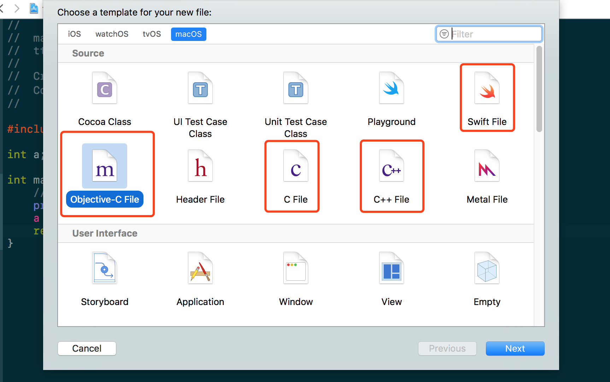
如果大家觉得白色的编辑区背景刺眼的话，想要更换配色的话，可以在顶部的菜单栏中选择Xcode -> Preferences，
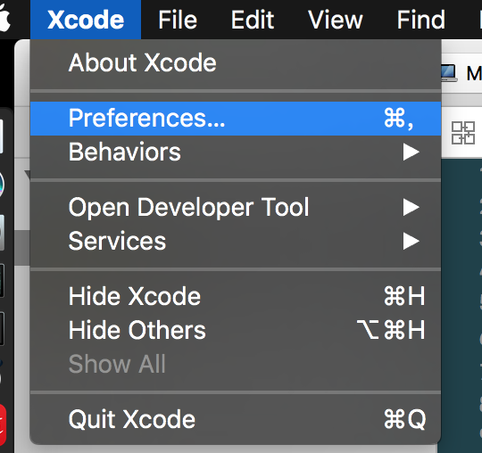
在弹出的新页面中，选择Font & color。挑选适合自己的配色，如果大家不喜欢Xcode自带的配色，可以在页面的左下角“+”号中添加外部配色方案。外部配色方案可以在网上找到，比如笔者的这个配色就是从网上找的，毕竟每天都要面对着它，眼睛舒服是第一。
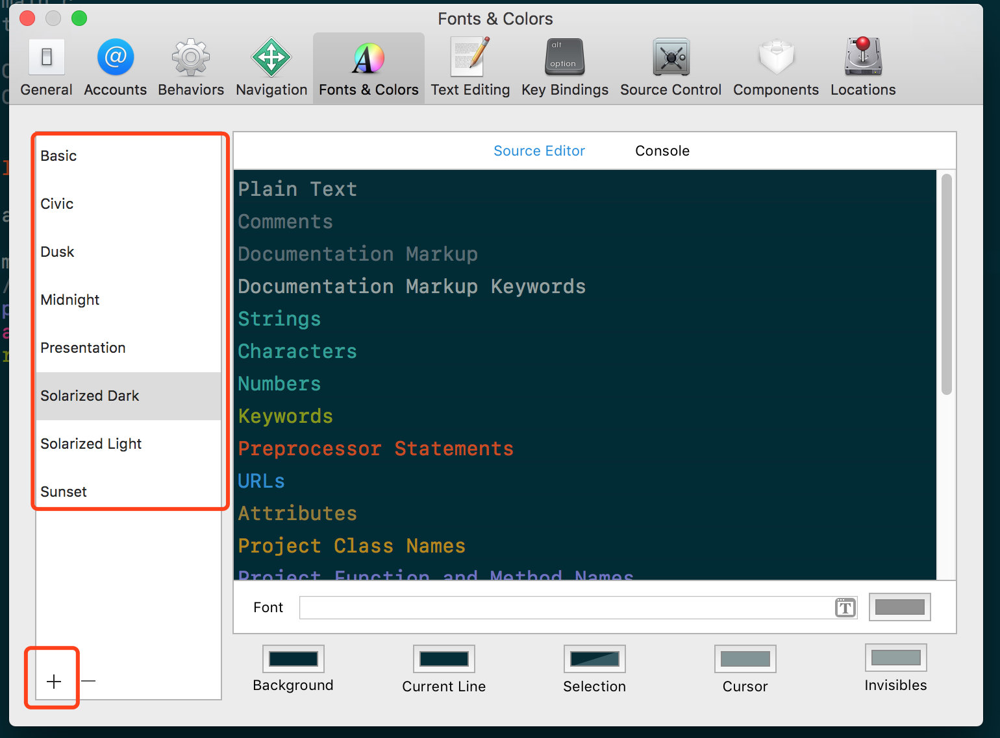
如果大家觉得字号有点小的话，可以按照下图的方式进行操作，
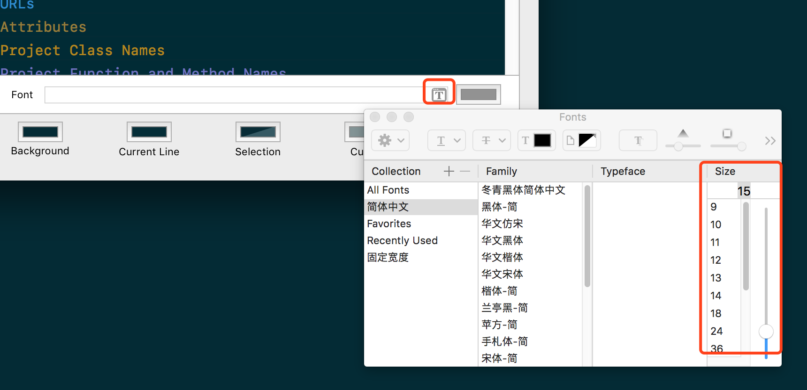
Xcode的简单入门就到这里了，有关更加深入的Xcode功能介绍，我们将在后面内容中进行介绍。笔者在上文中所讲述的内容都是一些基础内容，把这些基础内容都掌握了以后，用Xcode来写C和C++代码都不在话下，而且你还可以享受Xcode人性化的代码提示和自动纠错技术。
以上笔者介绍的Xcode内容与实际的iOS开发所用到的Xcode功能还差很多，上文中笔者介绍的Xcode部分使用功能，只是带大家入个门，使用Xcode完成一些课上或者课下的一些小实验或者刷刷OJ什么的，更加细致和编辑的Xcode使用技巧，我们在后天的章节中将为做一个详细讲解。